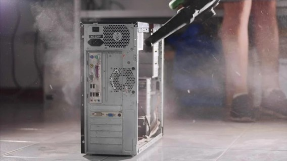

Datum objave: 5/6/2022
Može se reći kako je prašina tihi ubojica računala, stoga želite se pobrinuti da vaše računalo ostane što je više moguće bez prašine. Ako se u računalu nalazi velika količina prašine, bez obzira na optimalan broj ventilatora i dobar protok zraka, hlađenje Vaših komponenti neće biti zadovoljavajuće. Kako biste smanjili prašinu u kućištu, provjerite da zrak koji ulazi u kućište prvo prođe kroz filter. Mnoga kućišta imaju uklonjive filtere koji se mogu očistiti brzim ispiranjem, stoga naš savjet je minimalno jednom u dva mjeseca ukloniti filtere i očistiti ih. Ako Vaše kućište nema ovakve filtere preporučamo jednostavnu ugradnju istih. Filtere s kojima smo imali dobra iskustva možete pronaći u sljedećoj online trgovini. Ostavljajući filtere prljavim ili prekrivenim prašinom, smanjujete protok zraka i snagu hlađenja. Osim ventilatora i ventilacijskih otvora, druge glavne točke ulaska uključuju mnoge male praznine u kućištu i susjednim dijelovima.

Isto tako osim navedenih filtera bitno je ukloniti i prašinu iz samih ventilatora, te ostatka kućišta. Najbolji pristup je svakako ispuhivanje s kompresorom. Ako Vam kompresor nije na raspolaganju preporučuje se korištenje limenki sa zrakom pod pritiskom. Isto tako preporučujemo i korištenje mekih kistova i ručnika. Ukratko držati računalo čistim je, iako zamoran, izrazito važan proces.
Kod pojave visokih temperatura, osim na prašinu pažnju treba obratiti i na ispravnost ventilatora, te stanje termalne paste o čemu možete više pročitati u ranijem savjetu Pravilna aplikacija termalne paste.